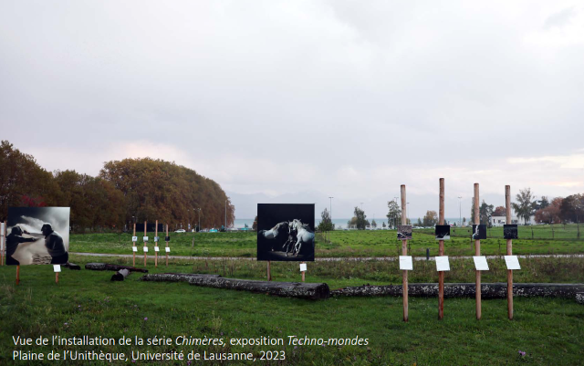
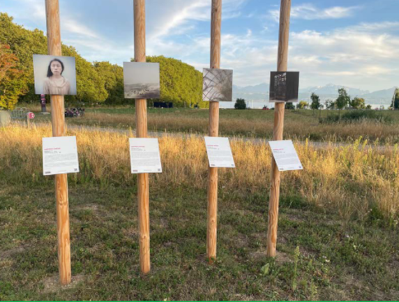
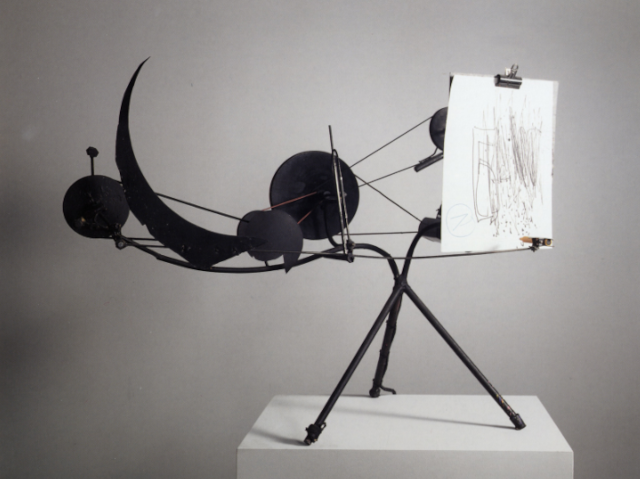
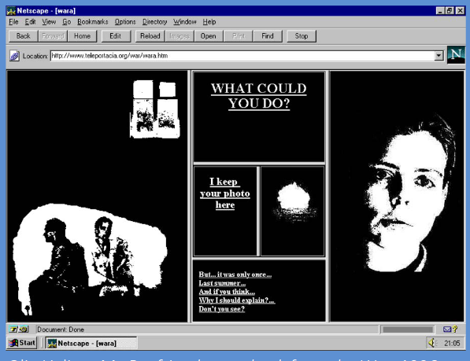
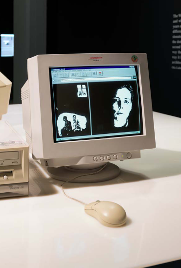
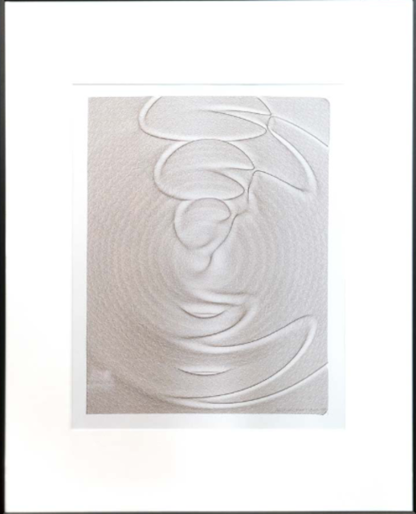
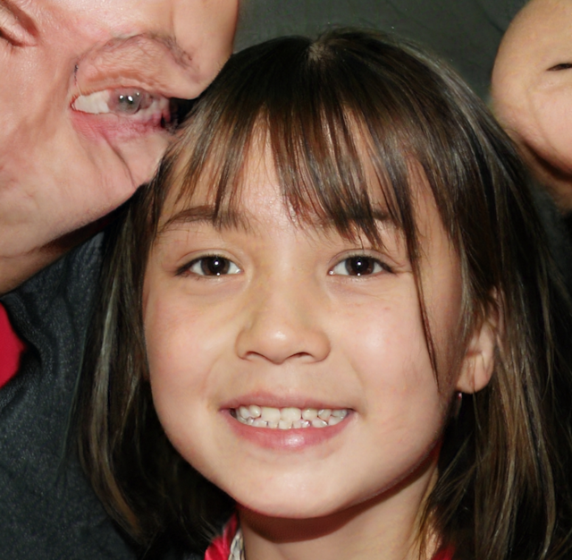
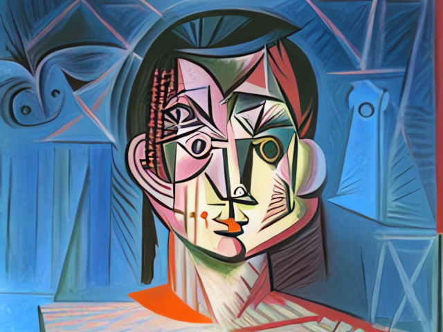
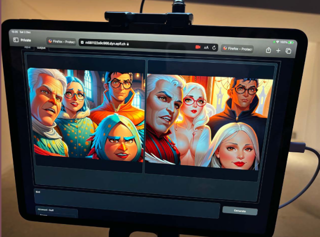

TP2-ESDN-02 : L’Art et le Numérique
Contents

TP2-ESDN-02 : L’Art et le Numérique#
Objectifs pédagogiques#
Connaître les principales et principaux artistes du digital art
Connaître les principales techniques utilisées
Créer une oeuvre d’art numérique et la présenter
illustrer quelques enjeux sociaux de l’art numérique
Introduction - Matthieu Gafsou#

Artiste#
Matthieu Gafsou (CH/F, né en 1981) est un photographe romand, qui vit et travaille à Lausanne. Après avoir obtenu un Master ès Lettres à l’Université de Lausanne, il a étudié la photographie à l’École d’arts appliqués de Vevey. Il a participé à de nombreuses expositions collectives et individuelles, et a publié sept livres. En 2018, l’exposition H+ est l’un des temps forts des Rencontres de la Photographie d’Arles qui fait ensuite le tour du monde (Chine, Australie, Italie, Irlande, Espagne, Suisse, etc.). En 2022, le projet Vivants est présenté in extenso au musée de Pully ainsi qu’à Paris Photo où il gagne le prix de la maison Ruinart. Matthieu Gafsou enseigne depuis plusieurs années à l’École cantonale d’art de Lausanne (ECAL).
Oeuvre#
Il s’agit de Chimères n°03, de la série Chimères, 2023
Description#
portrait d’homme en buste
moitié du visage dans l’ombre
fort contraste clair-obscur
regard au loin, hors cadre
quelle expression ?
front porte large cicatrice
arrière-plan indéfini, plongé dans le noir
Analyse#
visage fermé, dans ses pensées
homme d’âge mur qui semble souffrir, marques visibles et étranges sur son front
réalisme du rendu renvoie à portrait photographique
Questions#
Que vous évoque le titre Chimère 03
Réponses#
Chimère : monstre fantastique // rêve, songe, imaginaire, illusion
Comment comprendre la numérotation (ici n°3) ?
Évoque la série
Œuvre qui s’inscrit donc dans un ensemble plus large
Numérotation apporte élément impersonnel
On pourrait s’attendre à un titre qui donne une information sur la personne portraiturée. Ici, aucune information sur l’homme.
Conclusion générale#
L’homme n’existe pas, il ne s’agit pas d’une photographie, mais d’une image générée avec dall-e, soit une image construite avec une intelligence artificielle à partir de lots d’images que le système a traité dans son apprentissage
Aspect photoréaliste ou hyperréaliste
Trompe le-la spectateur-rice
Illusion de réel
Mais titre indique que le monde représenté dans la série de l’artiste relève de la fiction
Chimère, comme une illusion, a tous les effets du réel, invite à y croire
L’image a été générée, mais l’œuvre finale est bien matérielle : il s’agit d’une impression numérique de 25 x 25 cm (très petit format) qui exige des spectateurs de s’approcher
Contexte#
L’œuvre Chimères n°03 fait partie de la série Chimères, 2023 que Mathtieu Gafsou a produite pour l’exposition « Techno-mondes » qui a été présentée en plein air, dans un champ devant la bibliothèque cantonale et universitaire à l’UNIL.

Question 2#
Que souhaite montrer Matthieu Gafsou avec son installation Chimères ?


Urgence écologique
Quel monde laisse-t-on aux générations futures ?
Futur hyper-technologique possible sans considérer l’impact écologique des machines ?
La série Chimères est un récit formé d’œuvres de petits formats (25 x 25 cm) et de eux œuvres de dimensions monumentales (2 x 2m)
Les spectateurs sont ainsi contraints de s’approcher de certaines images et de reculer face à d’autres, de modifier leur regard en fonction des dimensions matérielles des œuvres.
Historique#
Un petit aperçu historique du digital art (ou art numérique) est présenté dans cette section.
Les historiens de l’art numérique citent quatre étapes qui ont conduit à l’art génératif que nous connaissons aujourd’hui.
1950 - 1960 : les machines de Tinguely
1960 - 1990 : le computer art
1990 - 2015 : l’essort du net art avec la démocratisation de l’Internet
2015 - aujourd’hui : l’intelligence artificielle, l’apprentissage automatique et l’art génératif
1950 - 1960 : Les machines mécaniques#
Les années 1950, c’est l’essor des machines de Tinguely.

L’image représente la machine Meta-Matic N° 10 de Jean Tinguely, artiste suisse né en 1925 et mort en 1991. C’est une sculpture mécanique animée. Elle est conservée au Musée Tinguely de Bâle.
1960 - 1990 : le computer art#
Le computer art représente toute forme d’art visuel qui a été créé à l’aide d’un ordinateur. Il s’agit-là de se replonger dans l’histoire de l’informatique et donc de quel type de machine était à disposition dans les années considérées (1960 - 1990). Les artistes ont construit des machines qui permettaient de dessiner puisque les imprimantes d’alors ne permettaient pas de créer des oeuvres d’art. On note encore que les artistes étaient aussi des ingénieurs et informaticiens capables de programmer les ordinateurs pour en faire de l’art.

Michael A. Noll, Gaussian Quadratic, 1962-1963

Georg Nees, 1968 - 1970 (tirage)
1990 - 2015#
L’année 1993 marque la naissance du World Wide Web au CERN à Genève. Au début il était réservé aux scientifiques et chercheurs mais a rapidement été adopté par le grand public. Et donc aussi aux artistes.
Net art#
La Russe Olia Lialina est parmi les premières à se saisir de l’occasion d’utiliser ce nouvel outil.


Les algoristes#
Les Algoristes est un groupe d’artistes numériques qui créent des œuvres d’art en s’appuyant sur leurs propres algorithmes, autrement dit, de l’art algorithmique.
Leur algorithme est :
if (creation && object of art && algorithm && one's own algorithm) {
include * an algorist *
} else {
exclude * not an algorist *
}
Jean-Pierre Hébert est un exemple des algoristes :
artiste FR, installé aux USA
Débuts dans 1970s
Formation d’ingénieur :
étudiant en ingénierie
job d’été chez IBM : programme en FORTRAN sur le premier ordinateur commercial d’Europe
cofonde avec Roman Verostko : le groupe algoriste en 1995
Credo du groupe emmené par Hébert : créer son propre algorithme pour créer œuvres (l’algorithme fait partie de la création)
Jean-Pierre Hébert, Un cercle trop étroit, dansant, 1995, dessin au traceur.

Conclusion#
C’est durant ces 25 années que les technologies de vision artificielle (machine vision) ont connu un énorme essor. Au début des années 2000 sont apparus les premiers grands réseaux de neurones artificiels (deep learning). Ces réseaux de neurones ont profité de l’avancée des technologies pour percer. Avec les grands réseaux de neurones artificiels sont apparus de nouveaux modèles informatiques comme les réseaux adverses génératifs (GAN en anglais : generative adversarial network) où deux réseaux sont mis en compétition sous le modèle de la théorie des jeux. Le premier réseau génère une image, le second tente de discriminer le résultat entre une image réelle et une image générée. C’est un jeu à somme nulle (où le gain est partagé complètement entre les adversaires.
Dès 2015 : IA, apprentissage automatique et art génératif#
This person does not exist :

Parfois l’IA se “trompe” (observez l’oeil de la personne de gauche):

ou celle de droite :
Pour créer des oeuvres d’art avec de l’IA générative, on utilise un logiciel dit text-to-image qui produit une image à partir d’un texte (prompt)
A vous de créer : Diffusionbee#
Nous allons utiliser le logiciel open-source Diffusionbee qui est lui-même basé sur le moteur d’IA générative Stable Diffusion. C’est une application en outre totalement gratuite.
Mode Image To Image#
Ce mode de création propose de créer une oeuvre d’art à l’aide d’une image que l’on propose à l’IA. A l’aide d’un prompt, il est possible de proposer à l’IA de créer une nouvelle image. Deux difficultés se présentent :
Le prompt : plus on donne de précisions, plus l’IA produira une image proche de ce que l’on avait imaginé.
Les options de création de l’image.
Exemple : Taylor Swift en version cubiste#
Voici l’image d’origine :

A l’aide du prompt Pablo Picasso cubist remove background et les options suivantes :

On obtient l’image suivante :

Mode Text To Image#
Ce mode de création propose de créer une oeuvre d’art à l’aide d’un prompt. C’est ce mode que l’on va utiliser dans ce TP. La création d’une image prend environ 1 minute.
Les options sont importantes et peuvent modifier grandement le résultat final. Il faut notamment choisir :
le style de l’image (dessin, photo, type de camera, type d’éclairage, etc..)
la taille de l’image. Par défaut celle-ci est de
512 x 512pixels. Pour les premiers tests, vous pouvez ramener ce chiffre à256 x 256pixels. La production de l’image sera 4 fois plus rapidele modèle (réseau de neurones artificielles pré-entraîné) que vous utiliserez
Ce que vous précisez dans le Le prompt est fondamental pour la qualité de l’image finale.
Les modèles#
Une IA générative a besoin d’un réseau de neurones artificielles pré-entraîné. C’est ce que l’on appelle un modèle dans le monde de Diffusionbee. On les appelle aussi checkpoints.
L’installation de base de Diffusionbee comporte qu’un seul modèle par défaut.
Il est possible d’installer des modèles pré-entraînés. Il faut d’abord les télécharger depuis l’un des deux sites principaux :
Une fois téléchargés, il s’agit de les importer dans Diffusionbee (menu->Settings->Add new models). On peut ensuite les utiliser en précisant dans les options de création de l’image quel modèle on souhaite utiliser.

Prompt : Astronaut riding a unicorn, best quality, masterpiece, ulta-high res, photorealistic, modèle : PicxReal_1. Observez la patte avant droite de la licorne. En utilisant l’outil GIMP (Outils -> Amélioration -> Heal Selection sur une sélection à main levée), on peut supprimer ce problème :

Exemple d’un modèle spécifique à l’architecture :

Prompt : Entire private house, ocean in the distance, palm trees, photorealistic, dvArchModern, modèle : dvArch
Exemple d’un modèle spécifique à la mode :

Prompt : Full body shot of center of view for a female with a colored dress, shirt, shoes, modèle : FashionModel_v10
Exemple d’un modèle spécifique à l’univers des mangas (observez les biais du résultat) :

Prompt : gamer girl sitting in a dark gamer room in front of a intricate desk, contrast, camera, light particles, light rays, tech happy, sporty, tea cup, desk accessories, best quality masterpiece, photorealistic, detailed, HDR, shallow depth of field, hisgh contrast, backlighting, chromatic aberration, sharp focus, RAW color photo, modèle : makeItAnime_miaF8Vaev1
Le prompt#
Attention : le prompt est toujours en anglais (vous avez le droit d’utiliser un traducteur en ligne.
Le positive prompt#
Toute la difficulté dans une IA générative est le prompt c’est-à-dire les éléments que vous allez donner à l’IA pour créer votre oeuvre.
Soyez précis !
chaque élément de l’image doit être séparé par une virgule
Essayez de respecter un ordre précis :
Quoi ? (par exemple :
A private house by the see)Détails ? (par exemple :
black man wearing a hat)Comment ? (par exemple :
Children's draw,Photorealistic,Using a Canon EOS 90D)Flags du modèle (par exemple :
dvArchGothic)
Le negative prompt#
Le négative prompt permet d’ajouter des termes que vous ne voulez pas dans votre création. Diffusionbee requiert que vous l’activiez avant de pouvoir l’utiliser (Options -> Negative prompt -> Enable)
Exercice 1 : Prompt battle !#
Pour prendre en main l’outil, suivez la consigne : trouvez le prompt (positif et négatif) pour s’approcher le plus possible de l’image suivante, la reproduire. Nous utiliserons le modèle par défaut.

Exercice 2 : Créer une oeuvre d’art#
Choisir un thème :
auto-portrait
un paysage que j’apprécie en l’an 2300
Créer l’image à l’aide de Diffusionbee
Modifier l’image à l’aide de GIMP
Ecrire un texte qui décrit l’oeuvre (pourquoi ?)
Rendre sur moodle :
L’oeuvre d’art au format
pngLe texte accompagnant
Enjeux de l’IA générative Text-to-Image#
Rôle de l’artiste (et de l’humain plus généralement)#
beaucoup de choix
prompt à rédiger
recherche préalable et tests pour comprendre le système
choix et sélection des images parmi les centaines d’images générées
sélection d’une image
Compétences techniques#
l’usage de ces générateurs d’images nécessite un certain temps de pratique
comprendre leur fonctionnement
comprendre comment orienter les prompts pour aboutir aux images désirées
articuler dans un langage textuel l’image désirée (implique mode opératoire particulier qui implique d’être capable de décrire l’image et ses propriétés avant de l’obtenir)
Prompt doit tout définir: le rendu, le style souhaité (à la manière de…), les effets de lumière, le placement de la lumière, le cadrage, l’ambiance générale, l’arrière-plan, etc.
Cela implique de connaître précisément les termes techniques (clair-obscur, portrait en pied, en buste, etc.)
Et de connaître l’histoire de l’art (une peinture à la manière de Picasso ou de Warhol n’aura pas du tout le même résultat!)
nécessite aussi de tester la machine, de comprendre comment elle fonctionne, comment lui “parler”
censure: certains thèmes sont bannis, notamment la mort. L’artiste a dû trouver des stratégies de langage pour orienter le système.
Sélection des images : importance du choix (et de la séquence par la suite)
Retravail des images sur Photoshop (MG a utilisé une fonction sur Photoshop qui colorise automatiquement les images en noir/blanc) dans
l’idée de pousser le plus loin possible l’usage de fonctions automatiques
Dans cette même veine, il a utilisé des systèmes de traduction automatiques (ex. deepl) pour traduire ses prompts lorsque nécessaires
Afin d’obtenir des images en haute résolution (qui peuvent être imprimées en format monumental 2 x 2 m), MG a aussi utilisé un programme d’« upscaling », c-à-d qui permet d’augmenter la résolution d’une image
Donc : plusieurs étapes ont nécessité des outils technologiques qui permettent une forme d’automatisation
Biais représentationnels#
Ex. app. Lensa
App lancée en 2018, devenue virale en 2022
permet de générer des portraits à partir de la photo d’une personne
Contre 3,99$, l’usager peut envoyer 10-20 images de soi, selfies, autoportrait, portrait, puis l’IA génère 50 images générées par des algo d’IA ds des styles variés

Répondez aux questions
Quels problèmes vous voyez ds cette application qui génère des portraits faite par l’IA à partir d’images de soi ?
problème d’utilisation des données
La politique de confidentialité et les conditions d’utilisation de Lensa stipulent que les images que les utilisateurs fournissent à l’IA peuvent être utilisées par Prisma AI, la société à l’origine de Lensa, pour perfectionner le réseau neuronal de l’IA.
Donc, en qq sorte, on nourrit la machine, on l’aide au machine learning en lui offrant des nouvelles images pour enrichir son dataset
Par ailleurs, par images de soi, il faut bien comprendre que ce sont les DONNéES DE NOTRE VISAGE que l’IA utilisent, c-à-d les donnéàes morphologiques, notre empreinte individuelle en qq sorte. ▪ DONC : question des données que l’on transmet au système qui les réutilise pour son apprentissage.
problème sociaux
La machine, dans son apprentissage, prolongent les biais de catégories, de typologie liées à l’indexation des images
Les résultats que proposent Lensa, vont plutôt dans le sens d’un prolongement de stéréotypes de genre
Par exemple : les femmes sont jeunes, visage clair, poitrine pulpeuse
les hommes sont virils, visages larges, musclés
donc on est dans des représentations qui vont à l’inverse de ce qui devrait se faire de nos jours et qui se fait ds l’art contemporain, c-à-d laisser une place à l’altérité, aux minorités, à la variété et se positionner contre des représentations homogènes qui perpétuent des stéréotypes visuels.

Résultat dans le cadre de l’exposition BD Numérique à l’EPFL en 2023. Résultat à partir d’une photo de 4 enfants : deux garçons de 9 ans et deux filles de 8 ans. Tous habillés en pull à capuchon ou en veste ! (Le prompt utilisé était bird)
Quelles représentations du monde ces outils proposent-ils ?
quelles sont les images que ces outils utilisent et quelles normes de représentation sont véhiculées ?
nécessité d’avoir regard critique sur les images fournies
approche créative peut permettre de subvertir, de déconstruire
Droit d’auteur#
qui est l’auteur de ces images ?
Sites internet :
this person does not exist : https://thispersondoesnotexist.com/
outil Duffision bee : https://diffusionbee.com/
pour les prompts : https://lexica.art/
gimp : https://www.gimp.org
traduction fra-eng : https://translate.google.ch
oeuvre Chimère de Matthieu Gafsou : https://wp.unil.ch/techno-mondes
My boyfriend came back from the war : http://www.teleportacia.org/ et https://sites.rhizome.org/anthology/lialina.html (émulation d’un navigateur d’époque : Netscape)
Sur l’application Lensa : https://www.artnews.com/art-news/news/does-lensa-ai-use-your-face-data-for-selfies-1234649204/
Sur le droit d’auteur : https://www.bilan.ch/story/contre-les-ia-la-bataille-des-droits-dauteurs-est-lancee-727992323656 et https://actualitte.com/article/110439/international/etats-unis-la-creation-d-une-ia-ne-peut-pas-beneficier-du-copyright